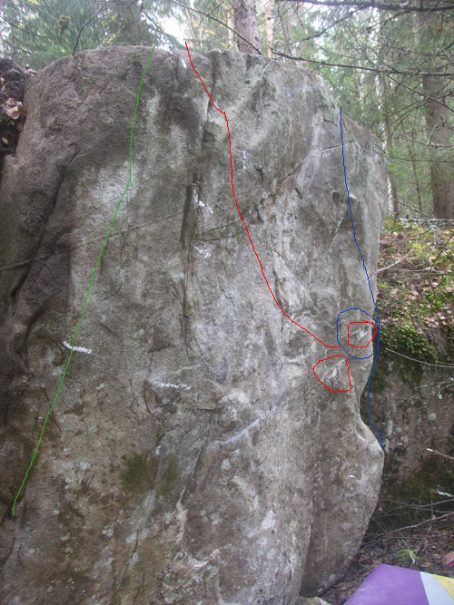

Turbo
Allmänt
Ett större område än Vikmanshyttan, kan säkerligen komma att rymma minst ett 20-tal problem tids nog. Än sålänge är bara en bråkdel utvecklat men mer är på G. Bla en supernajs och luftig Arete.
Soon to come
/c
Vägbeskrivning
Områden
Frontal

-
- Blessing It
- 6A+
- Grön linje, SS, Kort cruxig tur på areten till vänster på väggen/blocket.
-
- Modal Soul
- 6B+
- Röd linje, SS, Kort lite sträckig tur mitt på väggen. Börjar nere till höger på dubbellister och drar sedan upp åt vänster via sidolist. Areterna elim för händerna.
-
- Treår
- 5C
- Blå linje, SS, Den högra areten helt enkelt.

-
- Mr Hydes escape
- 6A
- Blå linje, Startas lättast på två crimpar vardera sida om areten, drar sedan efter catch ut åt höger
-
- Mr Hyde
- 6B
- Röd linje, Startas lättast på två crimpar vardera sida om areten, följ areten åt vänster på slopers och toppa ut via skönt 'homesafe' kristallgrepp
-
- Mr Hydes assis
- 7 någonting, PROJEKT
- Gul linje, gå från hh pinch och vh crimp och slappa areten därifrån vidare upp i Mr Hyde förslagsvis

-
- Dr Jekyll
- Gissningsvis 7A, PROJEKT
- Röd linje, Startar brett och slappas via areten upp med spricka som stöd, skralt med fotsteg för högern.
Skogen

-
- Odöpt
- 5
- Gul linje, sittstart med crimpers, upp via knopp och rakt upp för slabbig urtoppning
-
- Odöpt
- 5
- Grön linje, sittstart med crimpers, upp via knopp och fortsätt rampen ut till topps.
-
- Projekt
- ?
- Lila linje, sittstart med arete och crimper, cruxet är starten, betydligt lättare därefter

-
- Winter Lane
- 6A+
- Gul linje, Start med dubbel sidepull/undercling. Fint överhängande, upp via vä kant.
-
- Highs 2 Lows
- 6A
- Grön linje, Start med dubbel sidepull/undercling. Fint överhängande, upp via höger kant
-
- Strive
- 6A+-6B
- Röd linje, Fint överhängande, starta i dubbla sidepulls/underclings, dyno från stora grepp till tops utan sidokanterna.
Myren

-
- With Rainy Eyes
- 6A+
- Röd linje, Start på minipinch hh och sidepull vä. Upp via hö.
-
- Flowers
- 6A
- Blå linje, Start med höger i crimppocket, vä på sidepull/undercling.
-
- Projekt
- ?
- Röd+Lila linje, Start som WRE men istället för att dra höger och upp gå in vä och upp i slopig skål

-
- Think Different
- 6A
- Blå linje, SS, upp via sloperhyllan och sedan med dragning åt vänster.
-
- Projekt
- ?
- Grön linje, SS, men från sloperhyllan dyno rakt upp.
Projekt
Alla är öppna, klättra för njutningen inte äran. Om ni klättrar något nytt, snälla fota och för in här så att vi kan hålla koll på vad som är ogjort.